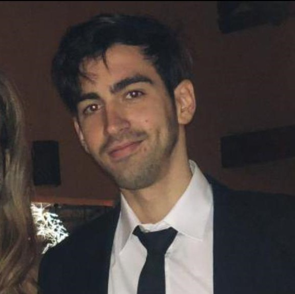

01 / ESTUDIO CREATIVO
Explorar proyecto ↗Craft Studio
Una identidad que cobra vida con el scroll. Diseño, movimiento y desarrollo en una experiencia cinematográfica.
JUAN PABLO MUTTONI
Desarrollo webs y experiencias digitales donde el diseño se encuentra con la interacción. Ese es mi espacio. Ese es el espíritu de Craft Studio.
Explorar proyectos ↘01 / TRABAJO SELECCIONADO
Tres proyectos. Tres maneras de transformar una idea en una experiencia que invita a quedarse.
3 proyectos
Una identidad que cobra vida con el scroll. Diseño, movimiento y desarrollo en una experiencia cinematográfica.
 ✳UNA WEB CON MUCHA ENERGÍA↗
✳UNA WEB CON MUCHA ENERGÍA↗Color, juego y movimiento para presentar las propuestas de animación infantil de una marca con personalidad propia.
 Más allá
Más alláUna nueva forma de recorrer espacios. Un prototipo web para explorar edificios y unidades, con vistas de día, de noche y en 360°.

02 / DETRÁS DEL CÓDIGO
Soy Juan Pablo, desarrollador web en Montevideo. Me interesa lo que pasa cuando una buena idea, un diseño cuidado y el código empiezan a trabajar juntos.
Con Craft Studio, llevo esa búsqueda a webs con personalidad y experiencias digitales que se pueden explorar. Pienso cada interacción como parte de la identidad del proyecto.
03 / MI FORMA DE CONSTRUIR
Entender qué hace diferente al proyecto y qué necesita contar. La identidad marca el camino.
Convertir esa dirección en una web adaptable, con jerarquía visual e interacciones que tienen sentido.
Revisar el ritmo, la navegación y la experiencia en cada pantalla. Los detalles también comunican.
04 / EL PRÓXIMO PROYECTO
Una idea, una web, una experiencia.
El primer paso es conversar.